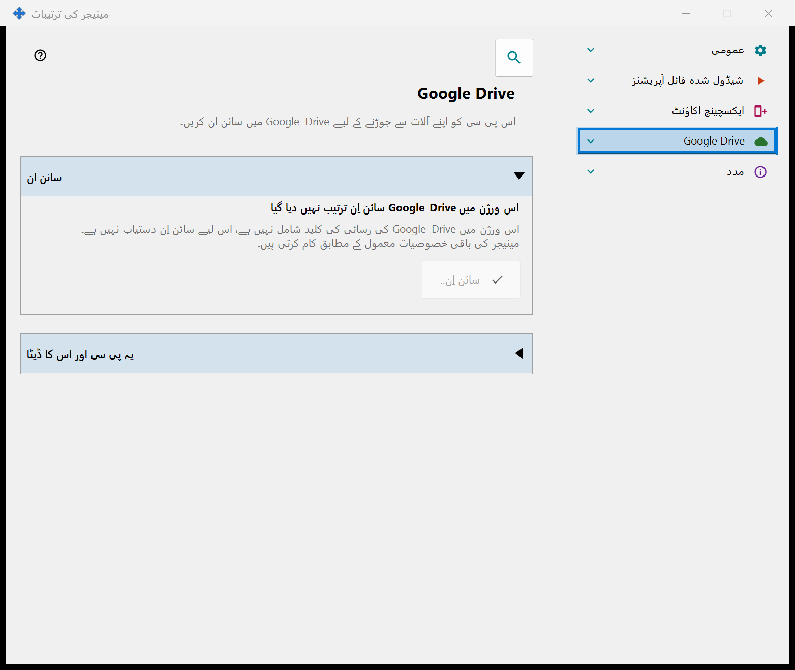
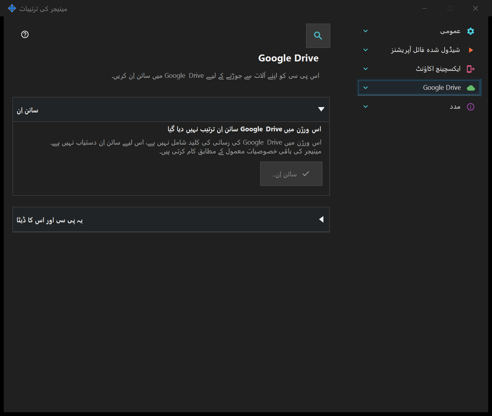

مینیجر کی ترتیبات
مینیجر کی ترتیبات
یہ کس مقصد کے لیے ہے
آغاز، تھیم، زبان، دور دراز اکاؤنٹ، اشاعت، کلپ بورڈ اور طے شدہ فائل کام مینیجر میں ہیں۔ مقامی سرور ضروری نہیں۔ اگر SFTP اشتراک جزو نصب ہو تو اس کے صفحات اس ونڈو میں ایک گروپ بناتے ہیں۔


اس ترتیب میں
ٹرے یا جزو کے لنک سے کھولیں۔ ونڈو کھولنا یا بند کرنا سرور کو چلاتا یا روکتا نہیں۔ دور دراز لاگ ان کے لیے مقامی سرور ضروری نہیں۔
عناصر
مینیجر کی ترتیبات
آغاز، تھیم، زبان، دور دراز اکاؤنٹ، اشاعت، کلپ بورڈ اور طے شدہ فائل کام مینیجر میں ہیں۔ مقامی سرور ضروری نہیں۔ اگر SFTP اشتراک جزو نصب ہو تو اس کے صفحات اس ونڈو میں ایک گروپ بناتے ہیں۔ ٹرے یا جزو کے لنک سے کھولیں۔ ونڈو کھولنا یا بند کرنا سرور کو چلاتا یا روکتا نہیں۔ دور دراز لاگ ان کے لیے مقامی سرور ضروری نہیں۔
مینیجر کی ترتیبات
آغاز، تھیم، زبان، دور دراز اکاؤنٹ، اشاعت، کلپ بورڈ اور طے شدہ فائل کام مینیجر میں ہیں۔ مقامی سرور ضروری نہیں۔ اگر SFTP اشتراک جزو نصب ہو تو اس کے صفحات اس ونڈو میں ایک گروپ بناتے ہیں۔ ٹرے یا جزو کے لنک سے کھولیں۔ ونڈو کھولنا یا بند کرنا سرور کو چلاتا یا روکتا نہیں۔ دور دراز لاگ ان کے لیے مقامی سرور ضروری نہیں۔
Google Drive
یہ صفحہ اس پی سی کو آپ کے اپنے Google اکاؤنٹ میں سائن اِن کرتا ہے تاکہ ایپ آپ کے Google Drive پر اپنا نجی چھپا ہوا فولڈر استعمال کر سکے۔ «سائن اِن..» دبائیں: ڈیفالٹ براؤزر کھلتا ہے، آپ Google پر رسائی کی اجازت دیتے ہیں، اور Google جواب کو ایک مقامی پتے کے ذریعے اس پی سی پر واپس بھیج دیتا ہے؛ اس کے بعد براؤزر کا ٹیب بند کیا جا سکتا ہے۔ جو واحد اجازت مانگی جاتی ہے وہ آپ کے Google Drive پر ایپ کے اپنے چھپے ہوئے فولڈر تک رسائی ہے (اسکوپ drive.appdata): ایپ آپ کے Google Drive کی کوئی دوسری فائل نہیں دیکھ سکتی اور اسے نہ ای میل پتہ ملتا ہے، نہ پروفائل کا ڈیٹا۔ اگر Google مطلوبہ رسائی سے مختلف رسائی دے تو سائن اِن مسترد کر دیا جاتا ہے۔ گہرے حروف والی سطر حالت دکھاتی ہے۔ «Google Drive میں سائن اِن نہیں ہے»: «سائن اِن..» دستیاب ہے؛ اگر رسائی منسوخ ہو گئی یا ختم ہو گئی ہو تو نیچے کی سطر یہ بتاتی ہے اور دوبارہ سائن اِن کرنے کو کہتی ہے۔ «براؤزر میں سائن اِن کا انتظار ہے..»: براؤزر میں سائن اِن مکمل کریں یا «منسوخ» دبائیں۔ «Google Drive میں سائن اِن ہو چکا ہے»: یہ پی سی آپ کے Google Drive سے جڑا ہوا ہے، اور اس کا نام اور مختصر شناخت کنندہ دکھایا جاتا ہے۔ «Google Drive اس وقت دستیاب نہیں ہے»: نیچے کی سطر وجہ بتاتی ہے - رابطہ نہیں ہے، اپ لوڈ کی یومیہ حد پوری ہو گئی ہے، آپ کے Google Drive میں خالی جگہ نہیں ہے، یا Google سے خرابی آئی ہے؛ رابطہ نہ ہونے پر اور خرابی کی صورت میں ایپ خود دوبارہ کوشش کرتی ہے۔ سائن اوٹ کے دوران «Google Drive سے سائن اوٹ ہو رہا ہے..» دکھایا جاتا ہے۔ «اس آلے پر سائن اوٹ کریں» ایک ہی سوال پوچھتا ہے، اور طے شدہ جواب «نہیں» ہے۔ «ہاں» کے بعد یہ Google پر رسائی منسوخ کرتا ہے، آپ کے Google Drive کے چھپے ہوئے فولڈر سے اس پی سی کے ریکارڈ حذف کرتا ہے اور اس پی سی پر محفوظ سائن اِن ٹوکن حذف کر دیتا ہے؛ بٹنوں کے نیچے کی سطر بتاتی ہے کہ کتنے ریکارڈ حذف ہوئے، یا یہ کہ Google نے رسائی کی منسوخی کی تصدیق نہیں کی - تب آپ اسے اپنے Google اکاؤنٹ کی ترتیبات میں منسوخ کر سکتے ہیں۔ Google کی رسائی کی کلید کے بغیر بنے ورژن میں صفحہ «اس ورژن میں Google Drive سائن اِن ترتیب نہیں دیا گیا» دکھاتا ہے، «سائن اِن..» غیر فعال رہتا ہے اور مینیجر کی باقی خصوصیات معمول کے مطابق کام کرتی ہیں۔


مینیجر کی ترتیبات
آغاز، تھیم، زبان، دور دراز اکاؤنٹ، اشاعت، کلپ بورڈ اور طے شدہ فائل کام مینیجر میں ہیں۔ مقامی سرور ضروری نہیں۔ اگر SFTP اشتراک جزو نصب ہو تو اس کے صفحات اس ونڈو میں ایک گروپ بناتے ہیں۔ ٹرے یا جزو کے لنک سے کھولیں۔ ونڈو کھولنا یا بند کرنا سرور کو چلاتا یا روکتا نہیں۔ دور دراز لاگ ان کے لیے مقامی سرور ضروری نہیں۔
مینیجر کی ترتیبات
آغاز، تھیم، زبان، دور دراز اکاؤنٹ، اشاعت، کلپ بورڈ اور طے شدہ فائل کام مینیجر میں ہیں۔ مقامی سرور ضروری نہیں۔ اگر SFTP اشتراک جزو نصب ہو تو اس کے صفحات اس ونڈو میں ایک گروپ بناتے ہیں۔ ٹرے یا جزو کے لنک سے کھولیں۔ ونڈو کھولنا یا بند کرنا سرور کو چلاتا یا روکتا نہیں۔ دور دراز لاگ ان کے لیے مقامی سرور ضروری نہیں۔
مینیجر کی ترتیبات · SFTP اشتراک کی ترتیبات · ایکسچینج سرور کی ترتیبات